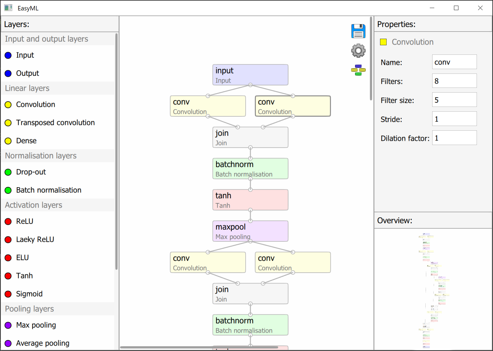
- saves your model
- opens options for changing visual aspects
- arranges layers according to made connections
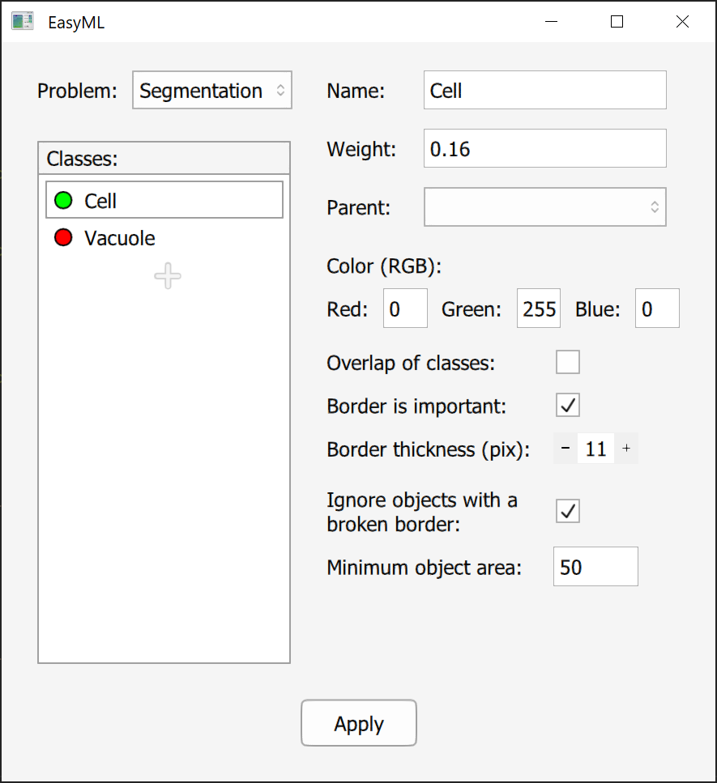
Name - name of a class. It is just for your convenience.
Weight - used for weight accuracy during training and validation.
Calculated automatically during data preparation based on the frequency of classes. Can be also specified manually.
Parent - adds a class to the specified parent.
Parent 2 - appears if the first parent is specified. Adds a class to the specified parent.
Color (RGB) - RGB color of a class, which should correspond to its color on your images. Uses 0-255 range.
Overlap of classes - specifies that a class is an overlap of two classes and should be just added to specified parents.
Border is important - makes a separate class during training which detects borders of the current class.
Border thickness - specifies thickness of a border that should be detected.
Ignore object with a broken border - removes objects that do not have a closed border during application of a model.
Minimum object area - removes objects that have area smaller than specified.
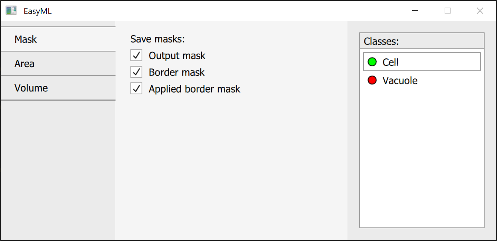
Output mask - exports a mask after applying all processing except for border data.
Border mask - exports a mask with class borders if a class has border detection enabled.
Applied border mask - exports a mask also processed using border data.
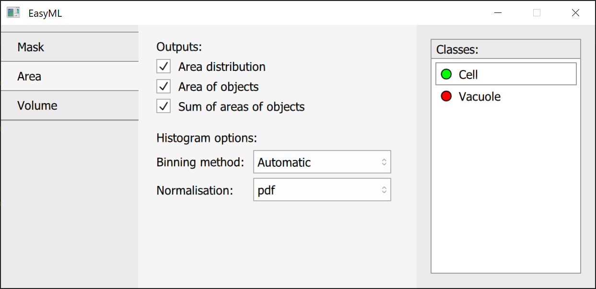
Area distribution - exports area distribution of detected objects as a histogram.
Area of objects - exports area of each detected object.
Sum of areas of objects - exports sum of all areas for each class.
Binning method - specifies a binning method: automatic, number of bins or bin width.
Value - number of bins or bin width depending on previous settings.
Normalisation - normalisation type for a histogram: pdf, density, probability or none.
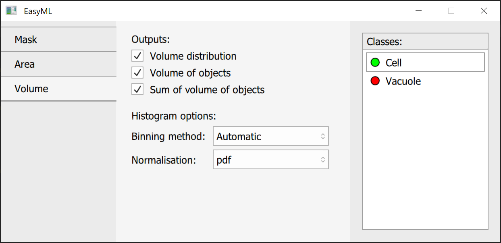All is the same as for area.
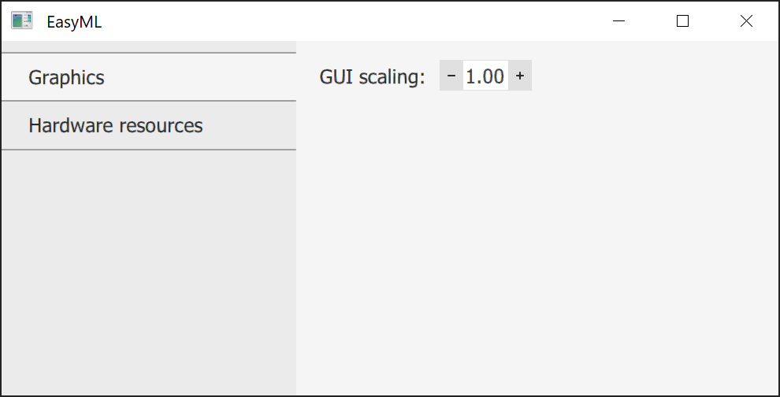
GUI scaling - scales GUI by a given factor.
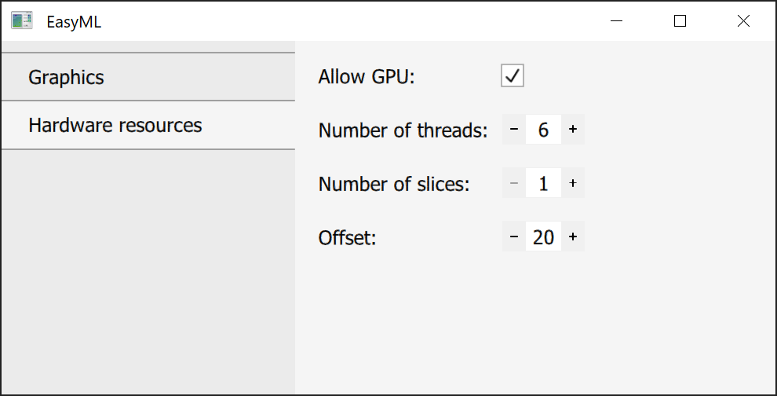
Allow GPU - allows to use a GPU if a compatible one is installed.
Number of threads - a number of CPU threads that will be used.
Number of slices - allows to process images during validation and application that otherwise cause an out of memory error by slicing them into multiple parts. Used only for segmentation.
Offset - offsets each slice by a given number of pixels to allow for an absence of a seam.
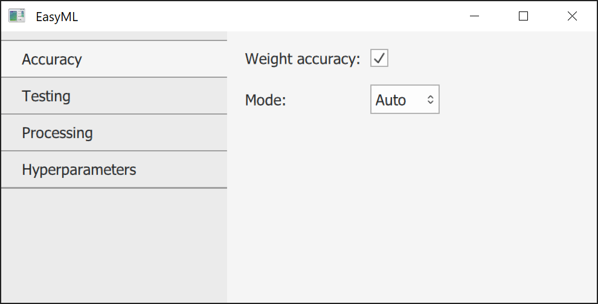
Weight accuracy - uses weight accuracy where applicable.
Mode - either Auto or Manual. Manual allows to specify weights manually for each class.
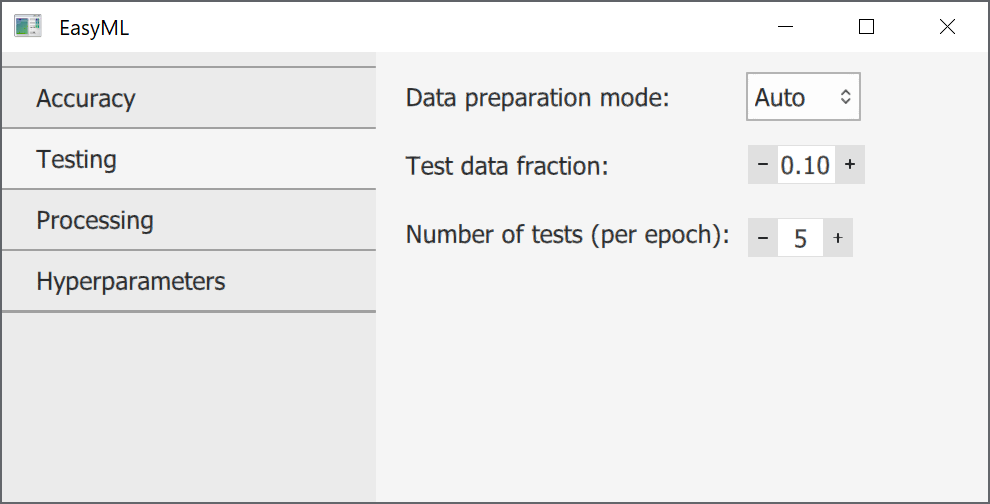
Data preparation mode - either Auto or Manual. Auto takes a specified fraction of training data to be used for testing. Manual allows to use other data as testing data.
Test data fraction - a fraction of data from training data to be used for testing if data preparation mode is Auto.
Number of test - a number of tests to be done each epoch at equal intervals.
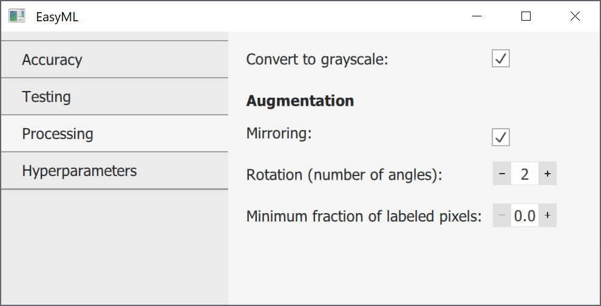
Convert to grayscale - converts images to grayscale for training, validation and application.
Mirroring - augments data by producing horizontally mirrored images.
Rotation - augments data by rotating images using a specified number of angles. 1 means no rotation, only an angle of 0.
Minimum fraction of labeled pixels - if supplied images are bigger than a model's input size, then an image is broken into chunks with a correct size. This option specifies the minimum number of labeled pixels for these chunks to be kept.
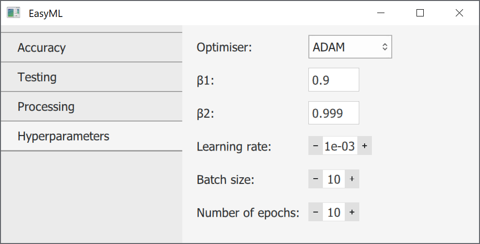
Optimiser - an optimiser that should be used during training. ADAM usually works well for all cases.
Next are parameters specific for each optimiser.
Learning rate - specifies how fast a model should train. Lower values - more stable, but slower. Higher values - less stable, but faster. Should be decreased as training progresses.
Batch size - a number of images that should be batched together during training.
Number of epochs - a number of rounds for which a model should be trained.

Save path - a folder where output data should be saved.
Analyse by - either file or folder. Used for segmentation. Analysis by file treats every image independently. Analysis by folder combines data for images in the same folder.
Output data type - a format in which data should be saved.
Output image typeOutput image type - a format in which images should be saved.
Scaling - used for segmentation. Converts pixels to a unit of measurement of your choice.